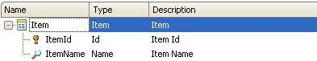
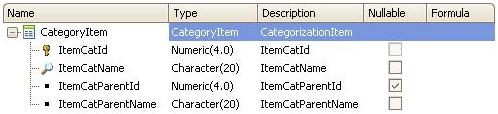
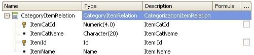
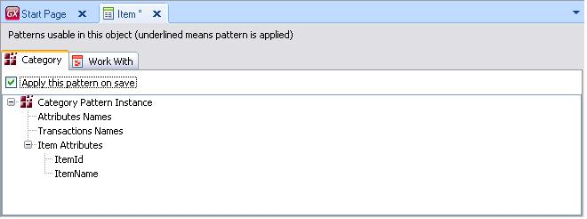
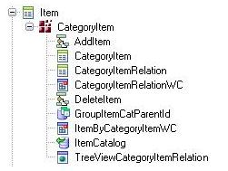
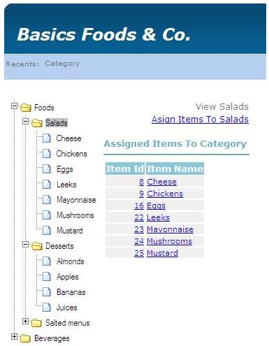
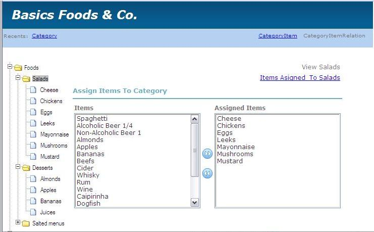

The name 'Category' is self-descriptive, as this pattern is used to 'categorize' items. See the Difference between Type and Category. When you have a set of things, it's very convenient to gather them in groups or 'categories'. Most of the time this is quite simple, just adding a Category transaction to the model is enough: Category CategoryId* CategoryName Item ItemId* ItemName CategoryId CategoryName However, sometimes more advanced features are necessary:
The purpose of this pattern is to provide all the objects needed to implement a 'high-end' Category engine for a given transaction. Canonical ExampleThis pattern is very useful for building Product Catalogs.
Beverages
Alcoholic Beverages
Wines
Red
'Wine xxxx' (item)
'Wine yyy' (item)
...
Beer
Light
'Beer 123' (item)
...
This kind of catalog usually has a validity period, and you can have more than one Catalog at once. Category Pattern ImplementationFor the generation of the default instance, you must have an Item transaction:  Supposing the pattern is applied to an Item transaction (above), then the new transactions that this pattern generates by default will be as follows:   Notes
Functionality needed:
Category Pattern InstanceThe Instance has the following nodes: 
By default this pattern generates the following objects:
The picture below shows the full node:  TreeView Sample 1From the TreeView Web Panel you can not only obtain views but also assign items to categories. The following picture shows what happens after selecting the Salads node.  TreeView Sample 2Clicking on Assign Items To Salads takes you to the situation shown in the picture below. Here, the back and forward buttons allow you to move elements from one side to the other for the Salads category.  See also Setting the Category Pattern to know the general settings related to all instances. Note:This Pattern features the use of the Treeview User contol in order to render the folder and category view on screen.
|